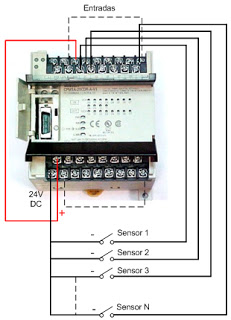

Un chipset (traducido como circuito integrado auxiliar) es el conjunto de circuitos integrados diseñados con base a la arquitectura de un procesador(en algunos casos, diseñados como parte integral de esa arquitectura), permitiendo que ese tipo de procesadores funcionen en una placa base. Sirven de puente de comunicación con el resto de componentes de la placa, como son la memoria, las tarjetas de expansión, los puertos USB, ratón,teclado, etc.
Las placas base modernas suelen incluir dos integrados, denominados puente norte y puente sur, y suelen ser los circuitos integrados más grandes después de la GPU y el microprocesador. Las últimas placa base carecen de puente norte, ya que los procesadores de última generación lo llevan integrado.
El chipset determina muchas de las características de una placa base y por lo general la referencia de la misma está relacionada con la del chipset.
A diferencia del microcontrolador, el procesador no tiene mayor funcionalidad sin el soporte de un chipset: la importancia del mismo ha sido relegada a un segundo plano por las estrategias de marketing.
CPU Central Processing Unit (CPU/Unidad Central de Procesamiento) también llamado microprocesador o simplemente procesador, es el componente principal del ordenador y otros dispositivos programables, que interpreta las instrucciones contenidas en los programas y procesa los datos. Las CPU proporcionan la característica fundamental del ordenador digital (la programabilidad) y son uno de los componentes necesarios encontrados en los ordenadores de cualquier tiempo, junto con la memoria principal y los dispositivos de entrada/salida. Se conoce como microprocesador el CPU que es manufacturado con circuitos integrados. Desde mediados de los años 1970, los microprocesadores de un solo chip han reemplazado casi totalmente todos los tipos de CPU y hoy en día, el término "CPU" es aplicado usualmente a todos los microprocesadores. La expresión "unidad central de proceso" es, en términos generales, un dispositivo lógico que pueden ejecutar complejos programas de ordenador.
Dispositivo asociado al bus que es capaz de iniciar y controlar la comunicación en el bus.
Es una especie de controlador de tráfico. En el PC XT es el chip 8288 y en el AT es el 82288. El procesador necesita del concurso de este chip para generar el juego completo de señales del bus de control.
Tambien existe un controlador llamado: "Control del bus asíncrono." Una de las características principales del µP MC68000 es que la transferencias entre el µP y los dipspositivos externos ( incluída la memoria ) se realizan de forma asíncrona. Es decir, la velocidad de transferencia no viene dada por la frecuencia del reloj del sistema. De echo, en un sistema basado en el MC68000 cada dispositivo puede funcionar con una frecuencia de reloj distinta. De esta manera los datos se transfieren a la máxima velocidad admisible por los distintos dispositivos . Por ejemplo, si en un sistema determinado la memoria ROM tiene un tiempo de acceso de 500 ns., y el de la memoria RAM es de 250 ns., el MC68000 podrá transferir los datos a la memoria RAM al doble de la velocidad con que los transfiere a la memoria ROM. El control del bus asíncrono requiere unas señales que realizan el protocolo entre el microprocesador y los dispositivos externos:
Click Aqui para regresar al Inicio de la página.Las interrupciones del PC, a las que nos referimos más detenidamente en el epígrafe correspondiente ( H2.4), son manejadas por un chip conocido como PIC ("Programmable Interrupt Controller").
Originariamente era un 8259A, que puede manejar 8 peticiones de interrupción, pero pronto se hizo evidente que eran un número excesivamente corto, por lo que en 1984, IBM añadió un segundo controlador en el modelo AT. Este diseño, con dos controladores, ha permanecido invariable hasta nuestros días en lo que se refiere a su funcionalidad. Recientemente ha sido sustituido por el denominado APIC ("Advanced Programmable Interrupt Controller") en las máquinas Pentium y sucesoras, que está basado en un chip 82489DX.
DMA es el acrónimo de "Direct Memory Access"; se trata de un mecanismo incluido en la arquitectura del PC, que permite intercambios de datos entre la memoria y ciertos dispositivos sin intervención del procesador (por esta razón se denomina precisamente acceso directo a memoria); está controlado por un chip específico, el DMAC ("DMA Controller"). En los XT estaba integrado en un chip 8237A que proporcionaba 4 canales. Posteriormente en los AT se instalaron dos, ampliándose a 8 el número de canales. En el epígrafe dedicado al Acceso directo a memoria ( H2.3), se expone con más detalle su funcionamiento.
Controlador programable 8237 DMA
Un ejemplo de un controlador seria El controlador de DMA 8237, que suministra a la memoria y al E/S señales de control e información y direccionamiento a la memoria durante la transferencia de DMA. El 8237 es, en realidad, un microprocesador de propósito especial cuya labor es la transferencia de datos a alta velocidad entre la memoria y el espacio de E/S. Aunque este controlador quizá no aparezca como componente discreto en sistemas modernos basados en microprocesador, se emplea en los conjuntos de controladores integrados (chip-set) que hay en los sistemas más nuevos.
El 8237 tiene cuatro canales y es compatible con los microprocesadores 8086 y 8088. El 8237 puede expandirse para incluir cualquier número de entradas de canal de DMA, aunque parece ser que cuatro canales son adecuados para muchos sistemas pequeños. El 8237 puede efectuar transferencias de DMA a velocidades de hasta 1.6 Mbytes por segundo. Cada una puede direccionar a una sección completa de 64 Kbytes de la memoria y puede transferir hasta 64 Kbytes con una sola programación
Los ordenadores son máquinas síncronas, lo que significa que todas sus partes funcionan de forma acompasada. Es frecuente poner el ejemplo de los remeros en las películas de galeras, donde cada remero no va por su cuenta, todos siguen el ritmo del gordo del tambor. En el PC ocurre otro tanto, aquí el ritmo no lo marca un tambor, sino un metrónomo (reloj) que genera una señal (señal de reloj), que marca el ritmo de la "música" que es capaz de ejecutar el sistema. Esta señal está presente en el bus de control , la línea CLK.
El corazón del reloj es un oscilador controlado por un cristal de cuarzo que actúa de patrón (es un elemento fácilmente identificable con aspecto de almohadilla plateada). En los PC originales la frecuencia del cristal es de 14.31818 MHz. Esta señal está también presente en el bus de control, línea OSC, y la denominaremos frecuencia del oscilador. En los primitivos PCs la señal del reloj era de 4.77 MHz es decir, un tercio de la frecuencia del oscilador. La señal CLK es importantísima, ya que sin ella sería imposible un funcionamiento armónico de los distintos elementos (incluyendo el procesador, una de cuyas patillas conecta directamente con ella). Todos los sucesos internos tienen lugar al compás de este tic-tac electrónico.
En el PC original, el oscilador antes mencionado está montado en un chip 8284A (88284 en el AT), que se conoce como generador de reloj (no confundir con el reloj programable ). La fecha y hora, que había que introducir en la puesta en marcha del sistema, se perdía cada vez que se apagaba el equipo. Durante el funcionamiento, el sistema de fecha y hora era mantenido por una interrupción de alta prioridad ( H2.4) que ocurría unas 18 veces cada segundo.
A partir de la introducción del PC AT, se instaló en la placa base el denominado chip del reloj, abreviadamente RTC ("Real Time Clock"). Es un auténtico reloj que suministra la fecha y hora al sistema. Como este reloj debía continuar su funcionamiento incluso estando el equipo desconectado, se le dotó de una pequeña pila o batería.
Click Aqui para regresar al Inicio de la página.La tarjeta de video, es un componente electrónico requerido para generar una señal de video que semanda a una pantalla de video por medio de un cable. La tarjeta de video seencuentra normalmente en la placa de sistema de la computadora o en una placa deexpansión. La tarjeta gráfica reúne toda la información que debevisualizarse en pantalla y actúa como interfaz entre el procesador y elmonitor; la información es enviada a éste por la placa luego de haberlarecibido a través del sistema de buses. Una tarjeta gráfica se compone, básicamente,de un controlador de video, de la memoria de pantalla o RAM video, y elgenerador de caracteres, y en la actualidad también poseen un acelerador de gráficos.El controlador de video va leyendo a intervalos la información almacenada en laRAM video y la transfiere al monitor en forma de señal de video; el número deveces por segundo que el contenido de la RAM video es leído y transmitido almonitor en forma de señal de video se conoce como frecuencia de refresco de lapantalla. Entonces, como ya dijimos antes, la frecuencia depende en gran medidade la calidad de la placa de video.

Las entradas digitales se caracterizan por presentar dos estados diferenciados: presencia o ausencia de señal. El estado en el que se encuentran las entradas se puede visualizar mediante señalizadores luminosos llamados leds, que se encienden cuando la entrada está activada, es decir, cuando se cierra el circuito entre esa entrada y el común de las entradas.
De manera general, utilizaremos la tensión de 24V de corriente continua para cerrar el circuito de las entradas. Para ello, aprovecharemos la tensión de salida del propio autómata, que genera esta tensión. Hay que tener presente que si se conecta el positivo de los 24V (+) al terminal COMÚN de las entradas, habrá que llevar el negativo de los 24V (-) a cada una de las entradas que nos interese activar, y lo haremos mediante uno de los dispositivos de entrada que veremos en esta misma lección, como puede ser un pulsador, un final de carrera, un detector de proximidad, un interruptor, etc.
De algunos dispositivos como pueden ser presostatos o sondas de temperatura, se pueden obtener magnitudes físicas que son la presión y la temperatura, respectivamente. Mediante los mecanismos correspondientes, estas magnitudes se convierten en magnitudes analógicas, como tensión o intensidad eléctrica. Esta tensión o intensidad es la que se introduce a las entradas analógicas del autómata, y a través de convertidores analógico/digital propios del programa del autómata, se puede procesar la información de estos dispositivos.
Para hacernos una idea, pondremos el ejemplo de un presostato de una máquina que mide la presión de aceite de un circuito. Habrá que saber a qué presión hay que parar el grupo motor para cerrar/abrir el circuito de aceite. Mediante el sensor que transforma la magnitud física a magnitud analógica, introducimos esta información a la entrada analógica del autómata, para así poder tratar esta información, y decirle al programa en qué punto habrá que activar/desactivar la salida del autómata que corresponde al grupo motor del aceite.
Este tipo de entradas las utilizaremos en el caso que queramos realizar aplicaciones en las que los dos tipos de entrada vistos anteriormente no se ajustan a las necesidades. Podemos destacar las siguientes:
Un dispositivo de almacenamiento de datos es un conjunto de componentes electrónicos habilitados para leer o grabar datos en el soporte de almacenamiento de datos de forma temporal o permanente. Realizan operaciones de alfabetización física y lógica de los medios donde se almacenan los archivos de un sistema informático.
La fuente de alimentación es el dispositivo que se encarga de distribuir la energía a todos los componentes internos de la computadora. Tiene un ventilador propio que la mantiene fresca a ella misma como a todas demás partes de la computadora. Además, la fuente puede operar un ventilador auxiliar ubicado en cualquier otra parte de la computadora. Las fuentes están clasificadas por su potencia en watts, que hablando fácil se trata de la cantidad de energía eléctrica que pueden entregar a todo el sistema.
Una fuente de alimentación convierte la corriente alterna (AC) en una forma continua de energía que los componentes del ordenador necesitan para funcionar, llamada corriente continua (DC). A diferencia de algunos componentes de Hardware cuyo uso no es obligatorio, como podría ser un disco SSD, la fuente de alimentación es una pieza crucial porque, sin ella, el resto del hardware interno no puede funcionar.
La fuente de alimentación es a menudo abreviada como PSU y también se conoce como fuente de poder. Las placas base, cajas y fuentes de alimentación vienen en diferentes tamaños llamados “factores de forma”. Estos tres elementos deben ser compatibles para que funcionen correctamente juntos.
Definitivamente, la tecnología en general ha sido la causa principal y la acción más directa para la transformación del trabajo de las organizaciones en la posguerra del siglo XX. Tanto los bienes de capital «duros» (computadores, teléfonos, videos, facsímiles, grabadoras, etc.), como los programas y sistemas de información y comunicación en general, han incrementado enormemente la productividad y eficiencia de las organizaciones. Tenemos como ejemplos los siguientes: bases de datos en redes de todo orden y topología, sistemas de reservaciones en aerolíneas, sistemas de contabilidad y nóminas, archivos clínicos en centros de salud, sistemas de conmutación electrónica y un sin número de otras aplicaciones a procesos administrativos.
Click Aqui para regresar al Inicio de la página.La industrialización de los servicios de tecnología de información va a redefinir el mercado en términos de como las organizaciones evalúan, compran y seleccionan los servicios y como los vendedores desarrollan y establecen precios de los servicios. Para lograr esta estandarización, se requiere un enfoque hacia las soluciones genéricas y esto debe ser responsabilidad de los proveedores, que deben de desarrollar, operar y administrar el resultado de estos genéricos de TI. Aunque los servicios de TI están en proceso de madurez, la madurez de la industria se ha incrementado en aspectos evidentes, como la forma en que los servicios son implementados y administrados.
Click Aqui para regresar al Inicio de la página.El desarrollo de estas tecnologías y de las telecomunicaciones ha hecho que los intercambios de datos crezcan a niveles extraordinarios, simplificándose cada vez más y creando nuevas formas de comercio, y en este marco se desarrolla el Comercio Electrónico. Se considera “Comercio Electrónico” al conjunto de aquellas transacciones comerciales y financieras realizadas a través del procesamiento y la transmisión de información, incluyendo texto, sonido e imagen.
Click Aqui para regresar al Inicio de la página.{kind=link}